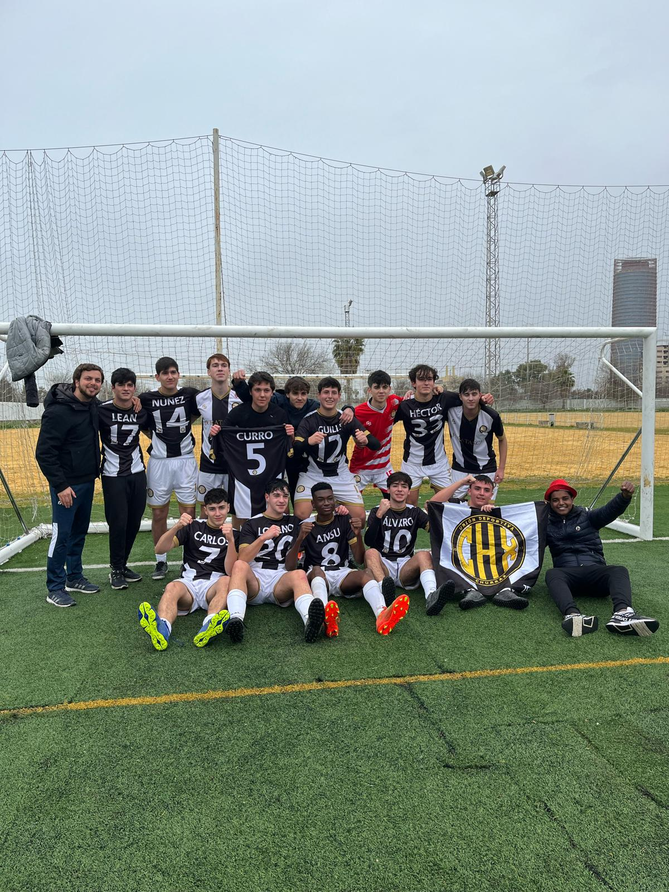

SEVILLA · FÚTBOL 7
EL BARRIO
JUEGA UNIDO.
Siete en el campo. Uno en el corazón.
La casa digital de UD Churrax: equipo, competición e historias de cada temporada.
SEVILLA, ANDALUCÍA

UD CHURRAX · GALERÍA UN MISMO LATIDO. VER FOTOS Y VÍDEOS ↗01 EL CLUB, AL DÍA
ACTUALIDAD UD CHURRAX
TODO EL EQUIPO.
EN UN MISMO SITIO.
Un vistazo rápido a cada área del club. Entra en cada apartado para profundizar, consultar detalles y revivir las temporadas.
01 / COMPETICIÓN
2026/27
Calendario publicado · debut el 11 NOV ante CD Nagogol Athletic FC
CLASIFICACIÓN, JORNADAS Y RESULTADOS →
02 / PLANTILLA
EL EQUIPO
Jugadores, cuerpo técnico y estadísticas
ENTRA EN LA PLANTILLA →
03 / IDENTIDAD
EL CLUB
Historia, escudo y filosofía Churrax
CONOCE NUESTRA HISTORIA →
04 / ACTUALIDAD
AL DÍA
Crónicas, comunicados y noticias
LEER NOTICIAS →
05 / MEMORIA
TEMPORADAS
Historias y resultados que perduran
ABRIR EL ARCHIVO →
06 / MOMENTOS
GALERÍA
Fotos y vídeos de partidos y postpartidos
VER FOTOS Y VÍDEOS →
Los datos deportivos se publican cuando el club los confirma.
02 TEMPORADA EN CURSO
2026 / 27
EL CAMINO SIGUE.
18 jornadas ya programadas. UD Churrax debuta el 11 de noviembre ante CD Nagogol Athletic FC en Vega de Triana.
Explorar temporada